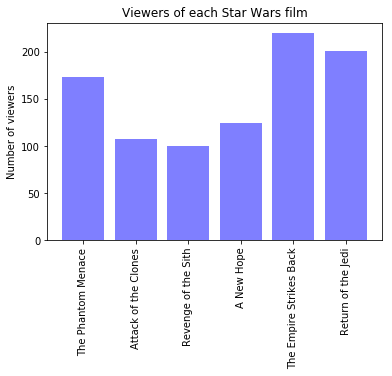

An analysis of user survey data related to the Star Wars film franchise (based on FiveThirtyEight data and a dataquest.io project). This analysis required a good amount of survey data cleaning and some basic matplotlib techniques.
This analysis found some interesting insights:
| Next steps |
| Proper statistical analysis to find if differences between groups are significant. |